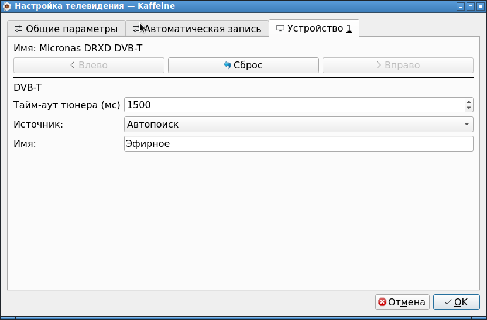
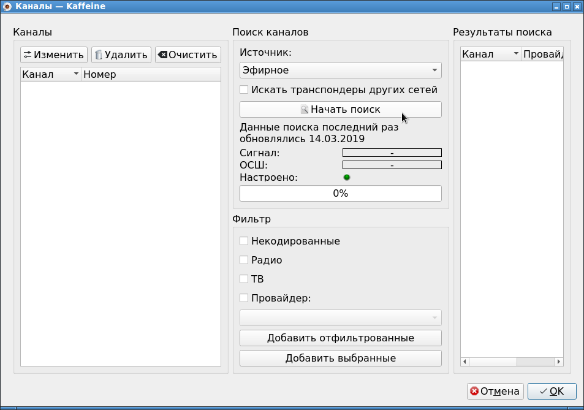

Установка и настройка Pinnacle PCTV Hybrid Pro Stick написана в статье:
Как захватывать видео через Pinnacle PCTV Hybrid Pro Stick в Linux
Здесь же собирается информация о том, как смотреть телепередачи с антенного входа. Естественно, антенна должна быть подключена.
В Linux существует программа kaffeine, в которой есть вкладка Телевидение. На ней расположен интерфейс просмотра TV. Программа в Debian Linux устанавливается так:
apt-gt install kaffeine w-scan
Для начала надо нажать кнопку Настройки телевидения. Далее перейти во вкладку Устройство 1. В нем по-умолчанию в поле Источник установлено значение Нет источника. Необходимо изменить это поле, и установить значение Автопоиск.

После этой настройки надо вызвать окно Каналы.

В этом окне надо нажать кнопку Начать поиск.
В моем регионе в 2024 году при сигнала в 88%, не находится ни одного канала. Антенна стоит у окна. ОСШ - это отношение сигнал/шум. Если при сканировании это значение все время стояло на нуле, то это значит, что ни одного сигнала найдено не было, в эфире был один шум.
Смущает надпись "Данные поиска последний раз обновлялись 14.03.2019". Возможно, что программа использует какой-то свой список частот, который устарел. И поэтому каналы не находятся.
А может быть все потому, что данный тюнер поддерживает стандарт DVB-T, а в России с 2012 года телевидение было переведено на стандарт DVB-T2, который несовместим с DVB-T, поэтому на антенном входе только шум.
Альтернативная путь по поиску TV-каналов - запустить утилиту w_scan, которая находится в пакете w-scan (обратить внимание на то что в названии пакета написано тире "-", а в названии бинарника программы используется нижнее подчеркивание "_"). Команда используется примерно так:
w_scan -c RU -f t > channels.conf
Запустится сканирование эфирных частот, и если тчо-то будет найдено, будет записано в файл channels.conf.